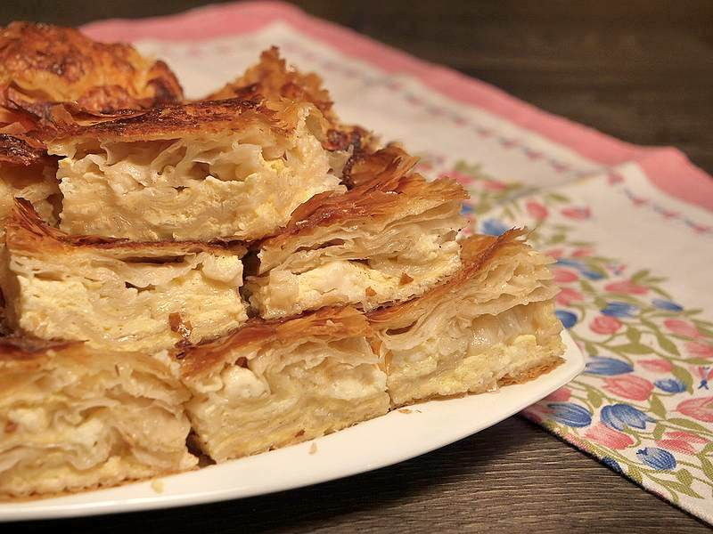

Potrebno je:
Umutiti jaja i ulje. Dodati kiselu vodu, pecivo i sir.
Staviti četiri kore u pleh, tako što ćete staviti na sva četiri zida od pleha po jednu. Kore staviti tako da vam pola kore bude van pleha. Preko poprskati uljem, pa opet staviti jednu koru preko celog pleha. Sledeće kore koje stavljate će biti po dve koje ćete nabrati uzdžno, pa fil. Tako raditi dok ne potrošite sve kore.
Kada ste završili sa korama i filom vi preklopite krajeve, koji su vam ostali da vise van pleha. Gibanicu isecite makazama na kocke i poprskajte uljem. Peći na 220 C, oko pola sata.